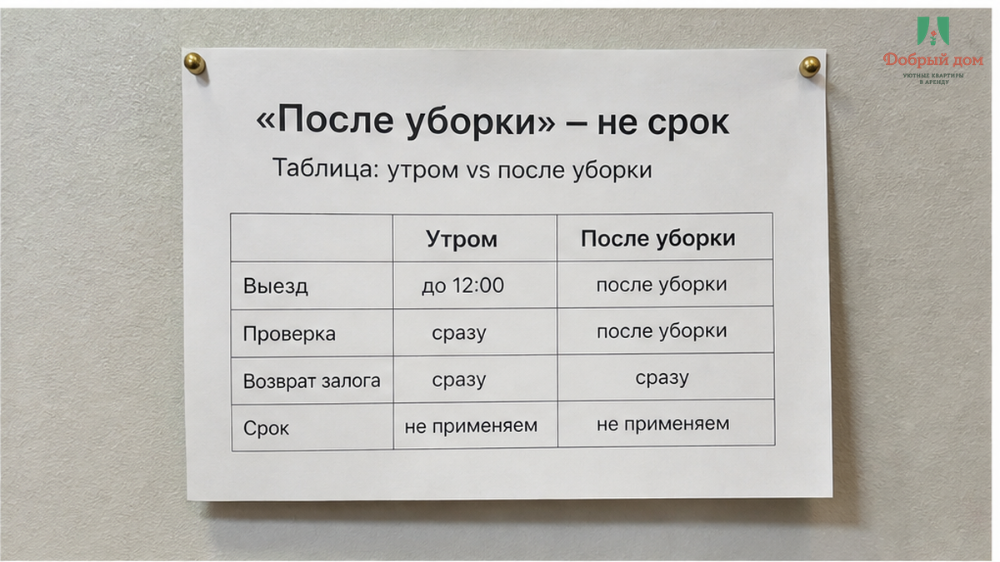
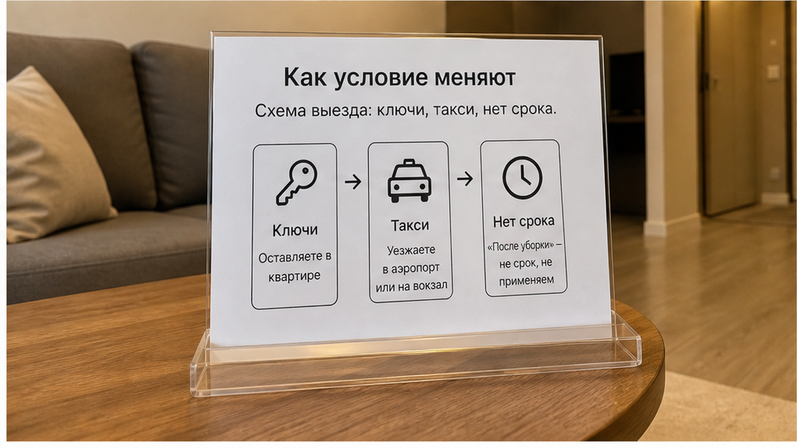
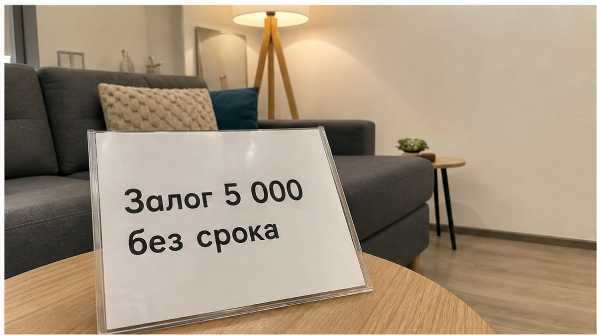
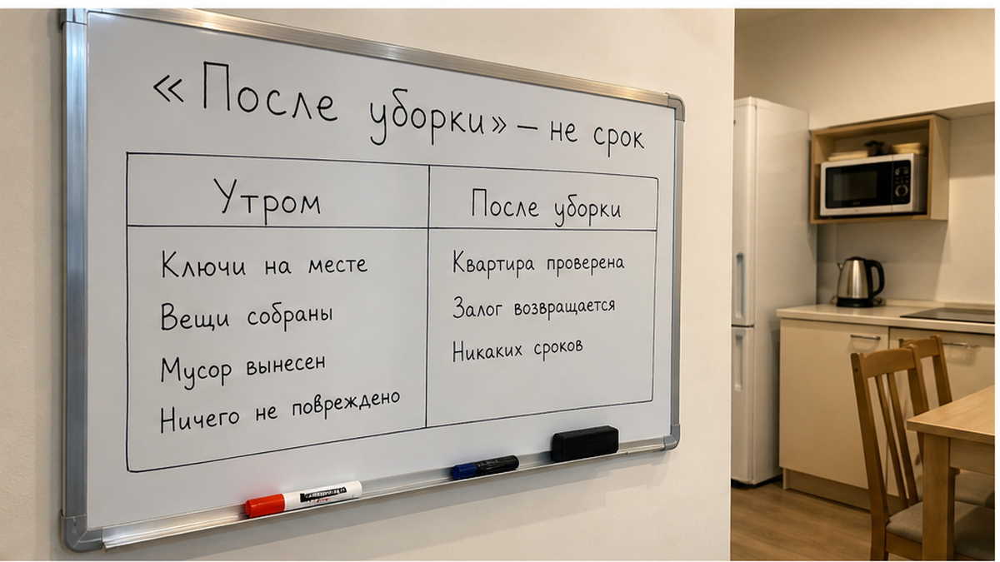
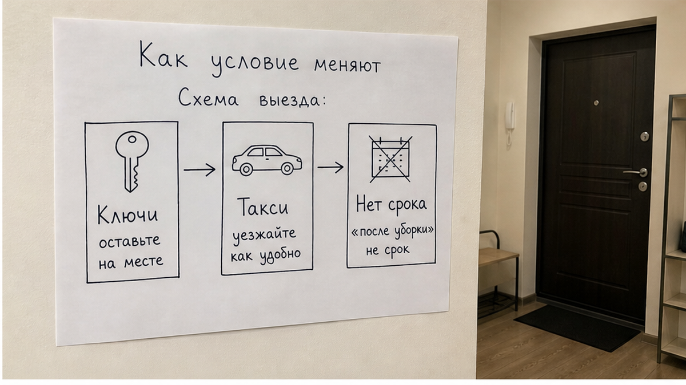
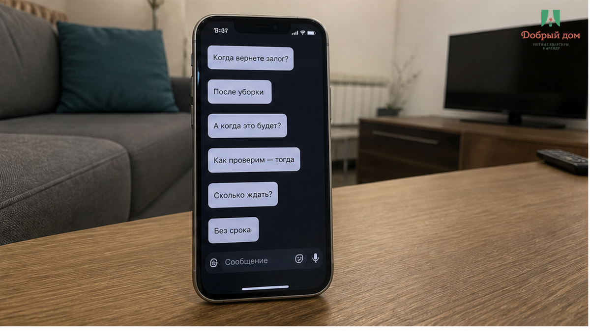

Вы перевели 5 000 ₽ залога ещё до заезда — для посуточной аренды в Тюмени это привычная практика. Вам написали: «На выезде вернём утром, сразу после передачи ключей». Ключи вы отдали. Квартиру оставили аккуратной: посуда вымыта, полотенца сложены, мусор вынесен. А в чате вместо «отправил» появляется другое сообщение: «Залог вернём после уборки».
Без даты. Без «до вечера». Без «в течение суток». Просто «после уборки» — будто уборка не работа со временем, а погода, которая когда-нибудь наладится.
Вы стоите с сумкой, такси уже подъехало, и приходит неприятное понимание: ваши 5 000 ₽ как будто перестали быть вашими. Вам не отказали, нет. Деньги просто подвесили. А залог перестаёт быть залогом ровно в тот момент, когда у него исчезает срок возврата.
Это уже не страховка квартиры и не формальность «на всякий случай». Это ваши деньги в чужом кармане на неопределённое время. И удерживает их там всего одна фраза — без единой цифры.
Я хост посуточной аренды в Тюмени, «Добрый дом». Мы общаемся с гостями в Telegram и MAX и разбираем такие случаи не для того, чтобы кого-то стыдить. Наша задача проще: помочь вам заметить опасную формулировку до перевода, а не после сдачи ключей.
Сравните две фразы.

«Вернём залог в течение 24 часов после выезда». Здесь есть цифра и понятная точка отсчёта. Если сутки прошли, вы вправе спокойно спросить: «Срок вышел, когда будет возврат?» Разговор становится коротким и предметным.

А теперь: «Вернём после уборки». Здесь срока нет. Уборка может быть сегодня, завтра или через несколько дней. Может оказаться, что клинер заболел. Что хозяин занят. Что решили дождаться следующего выезда и убрать всё сразу. И вы не можете говорить о просрочке, потому что её формально не существует: срок ведь никто не назвал.
Вам не отказали. Вас поставили в очередь без номера.
Вот механику стоит запомнить: не прямой отказ, не очевидный обман, а размывание срока. Отказ заметен сразу — на него можно реагировать. Размытый срок становится заметен через неделю, когда вы уже в другом городе, переписка ушла вниз списка, а сумма начинает казаться «не такой уж большой, чтобы снова писать».
Расчёт здесь не на вашу наивность. Расчёт на усталость.
Посмотрите, как иногда меняется одна и та же договорённость от брони до выезда.
Сначала: «Залог 5 000 ₽, вернём на выезде». Потом при заселении: «Вернём утром, как отдадите ключи». А в день выезда: «Вернём после уборки». Три фразы про одни деньги — и каждая следующая слабее предыдущей.

Вначале возврат был привязан к вашему выезду, то есть к событию, которое зависит от вас. Затем — к передаче ключей, что тоже вполне понятно. А потом — к уборке: событию, которое полностью находится на стороне хозяина и никак вами не контролируется.
Вот здесь и происходит подмена. Условие возврата переезжает из вашей зоны контроля в чужую. И заметить это трудно, потому что каждый отдельный шаг кажется небольшим.
Похожий механизм встречается и в других историях. Например, когда гость перевёл залог за посуточную, а на выезде услышал «не вернём», условие поменяли резко, одним сообщением. В ситуации, где в объявлении было указано «уборка включена», а на выезде выставили 1 800 ₽ за грязные простыни, подменили смысл слова «включена». А когда гости перевели 3 000 ₽ предоплатой и получили тишину в чате, срок возврата даже не размывали — его просто не обозначили изначально.
Формы разные, корень один: деньги ушли раньше, чем появилось понятное и проверяемое обязательство.
Скажу прямо, как хост: сам по себе залог — не зло. В квартире есть мебель, техника, сантехника, соседи снизу. Бывают разбитые варочные панели, залитые потолки и шумные компании, которые превращают обычную аренду в проблему для всего подъезда. Залог в таких случаях — нормальный инструмент защиты.

Ловушкой он становится, когда отсутствует хотя бы один из трёх важных пунктов.

Первое — сумма зафиксирована письменно. Не «примерно пять тысяч», а «5 000 ₽».
Второе — срок возврата зафиксирован письменно. Не «после уборки», не «как проверим» и не «в ближайшее время», а конкретно: «в течение такого-то количества часов после выезда».
Третье — заранее указан список оснований для удержания. Разбитое, сломанное, пропавшее имущество, курение в квартире, шум с приездом полиции. Не неожиданные формулировки, появившиеся уже после вашего отъезда.
Если хотя бы одного пункта нет, это уже не полноценный залог. Это беспроцентный займ незнакомому человеку, срок возврата которого он определяет сам.
В «Добром доме» на таких размытых условиях разговор заканчивается сразу: мы так не заселяем. Не предлагаем гостям подобные условия и не советуем соглашаться на них где-либо ещё.
Есть одна фраза, которая работает лучше отзывов и фразы «объявление давно висит, значит всё нормально».

Напишите в чат так: «Напишите, пожалуйста, одной строкой: сумма залога, срок возврата в часах и за что можете удержать».
Дальше просто посмотрите на ответ. Честный хост обычно отвечает быстро: эта информация у него уже есть, потому что она повторяется для каждого гостя. А тот, кто рассчитывает тянуть время, часто начинает уходить в объяснения: «Мы же не звери», «У нас никогда проблем не было», «Ну, как получится с уборкой».
Много слов вместо одной цифры — это тоже ответ. И хорошо, если вы получили его до перевода, а не после него.
Если с вами уже было подобное — залог «вернём, как только», который завис на недели, — расскажите нам, чем всё закончилось. Написать можно в Telegram или в MAX: max.ru/id660300569233_biz. Мы собираем и разбираем такие истории, чтобы видеть, какие формулировки сейчас используют в Тюмени и на чём гости чаще всего теряют деньги.
Момент выбора был не на выезде. На выезде рычагов уже почти нет: ключи отданы, вещи в такси, вы физически покинули квартиру.
Выбор был раньше — когда вам написали «залог 5 000 ₽», но не назвали срок возврата. И вы не переспросили. Не потому что вы наивны. Просто спрашивать о деньгах бывает неловко, особенно когда хост пишет уверенно, вежливо и будто всё само собой разумеется.
Вот это и важно поменять. Уточнить срок — не значит проявить недоверие. Это обычная деловая гигиена: такая же, как уточнить этаж, наличие лифта или адрес. Человек, который спокойно готов вернуть деньги в оговорённый срок, не обидится на вопрос. А вот тому, кому цифра мешает, неудобно именно из-за цифры.
То же правило работает с любыми словами «включено». В истории про «коммуналка включена» и счёт 1 840 ₽ на выезде механика та же: слово без цифры на входе превращается в цифру без понятного основания на выходе.
Сначала письменный срок. Потом перевод. Не наоборот.
Залог без срока возврата — не залог. Это ваши деньги в чужом кармане, и ключ от этого кармана не у вас. Обещание «после уборки» стоит примерно столько же, сколько обещание «когда-нибудь»: формально это не отказ, а по факту — ещё не возврат.
В «Добром доме» мы проговариваем условия до перевода и фиксируем их письменно. Без подвешенных денег, двусмысленных обещаний и сюрпризов при выезде.
Забронировать ночь и задать вопросы:
Telegram: @Dobriy_dom_72 · MAX: max.ru/id660300569233_biz
Бронирование и квартиры: бронирование · добрыйдом-72.рф
Телефон: +7 993 574-83-22 · Менеджер: @Dobriy_dom_Tyumen